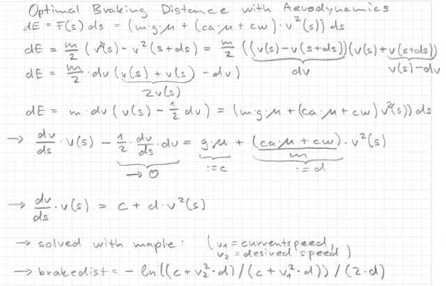
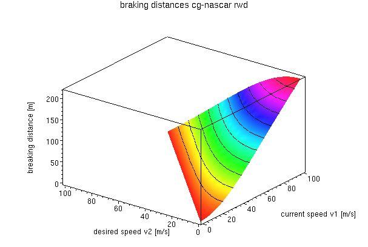

3.5.S Optimal Braking DistanceIntroductionThis section shows how I computed the optimal solution. It was quite a hassle, I needed to play with different approaches and to fight with maple... But after a day of thinking and playing, here it is. So I finally provide you a better solution than my robot berniw currently contains. Braking Distance First I developed a differential equation for v(s). Then I solved it with maple and got a function for v(s) with initial condition v(0)=v1. Finally I solved the function with v(s)=v2 for s, and that's it. I also compared and checked the result with the numerical approach. Discussion
The plot shows the braking distance s as a function of the current speed v1 and the
desired speed v2 (for cg-nascar-rwd). In fact I was a bit surprised of the shape of the surface. Why? Because
the kinetic energy of the car grows proportional to the square of the velocity. What makes
now the surface that flat?
|
ImplementationIf you want to implement it, replace the following line in getBrake(), driver.cpp float brakedist = (currentspeedsqr - allowedspeedsqr) / (2.0*mu*G); or float brakedist = mass*(currentspeedsqr - allowedspeedsqr) /
(2.0*(mu*G*mass + allowedspeedsqr*(CA*mu + CW)));
with float c = mu*G;
float d = (CA*mu + CW)/mass;
float v1sqr = currentspeedsqr;
float v2sqr = allowedspeedsqr;
float brakedist = -log((c + v2sqr*d)/(c + v1sqr*d))/(2.0*d);
|
Summary
|
|
Back |
Traction control, anti wheel locking, ... |